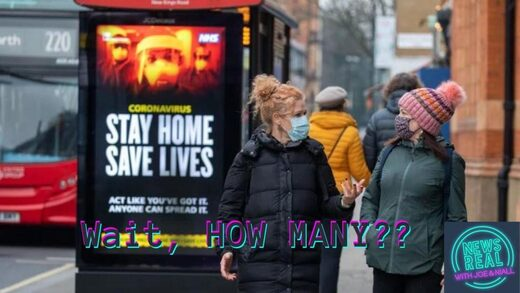

NewsReal Short: UK Official Stats Reveal How Many People Actually Died From Covid-19

In this NewsReal short, Joe and Niall discuss a recent Freedom of Information request in the UK which revealed the official number of those who died there in 2020 and 2021 from Covid-19. That is, it reveals the 'excess deaths' during the two years of the 'pandemic' - deaths that could not be attributed to other underlying causes.Dr. John Campbell, a retired senior nurse, broke down the numbers on his YouTube channel, revealing that the true 'death toll from Covid-19' in the UK is lower by a factor of ten than what has hitherto been reported in the media as 'the Covid death toll'.Not only that, the average age of death of those whose death was actually attributable to Covid-19 is higher than the average age of life expectancy in the UK. Epidemiologically-speaking, there was no pandemic...Running Time: 00:13:31 https://www.sott.net/article/463712-NewsReal-Short-UK-Official-Stats-Reveal-How-Many-People-Actually-Died-From-Covid-19